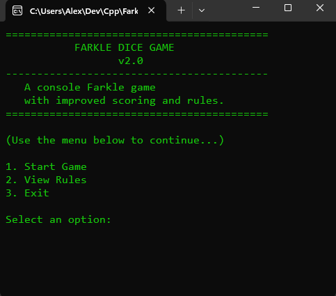
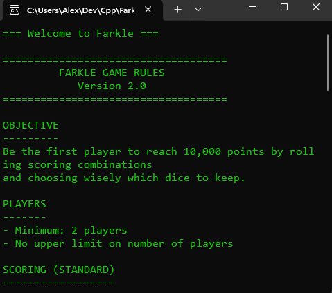
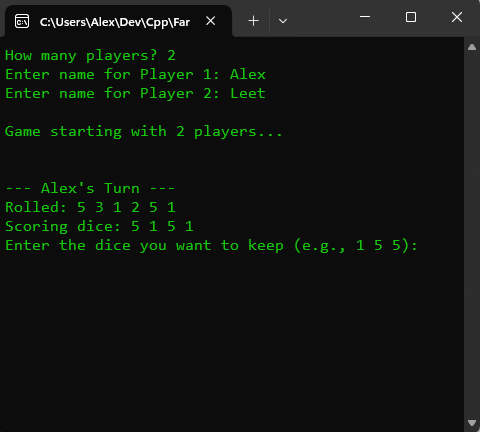

Algorithms & Data Structures Enhancement
CS-499 Capstone
/
Algorithms & Data Structures Enhancement
For this enhancement, I improved my original Farkle Dice Game project from IT-312. The first version had simple scoring rules and basic turn flow. For this capstone update, I redesigned the scoring system, strengthened the game logic, and added clearer rules and input checks. These updates make the game more reliable and easier for players to understand.
Overview
The goal of the enhancement was to improve how the program handles scoring, dice sets, and turn decisions. I added a "hybrid" scoring system that supports more real Farkle rules, such as straights, three pairs, and larger sets. I also improved how the game checks player input so the game doesn't break when someone enters something unexpected.
Improvements in Version 2.0
- Stronger scoring system that supports more combinations.
- Turn logic that handles "hot dice," entering the game, and losing points correctly.
- Better input checking so the game can handle mistakes safely.
- Cleaner code structure that separates scoring, turn flow, and setup.
Technical Enhancements
The upgraded version of the game uses clearer score calculations and stricter rules. I rewrote parts of the scoring logic so the game recognizes more dice patterns and reports points correctly. I also improved how the game decides when a player "enters" the game and made it automatic once they reach the entry score.
What Changed
- Added scoring for straights, three pairs, and extended sets.
- Improved turn flow so scoring resets correctly after a Farkle.
- Validated that the dice players choose to keep are actually allowed.
- Separated scoring logic into reusable functions.
- Made entering the game automatic once 500 points are reached.
Files Updated
Game.cpp — Improved scoring, turn flow, and validation.Player.cpp — Tracks whether a player has entered the game.main.cpp — Added start screen and rule viewing option.farkle_rules.txt — Updated rules for Version 2.0.
Reflection
This enhancement strengthened the algorithms behind a simple game and showed how much logic goes into even small systems. Updating the scoring and turn flow forced me to think about edge cases, different rule paths, and how to keep everything organized.
What I Learned
- How to break large problems into smaller functions.
- How scoring rules can be handled using arrays, counters, and pattern checks.
- The value of clear input validation to prevent user mistakes.
- How to structure independent components (Game, Player, Dice) in C++.
Challenges
- Making sure scoring worked correctly for every combination, including rare ones.
- Handling hot dice and turn resets without breaking other parts of the logic.
- Preventing invalid user input while keeping the game easy to play.
- Ensuring the updated rules matched the new scoring system in Version 2.0.
GitHub & Tools
View the enhancement branch on GitHub:
View on GitHub
Technologies
- C++
- Object-Oriented Design
- Algorithms
- Data Structures
Screenshots
These screenshots show the updated start screen, rules screen, player setup, and part of a gameplay sequence.
-

Start Screen
-

Rules Preview
-

Player Setup
-

Gameplay Sequence